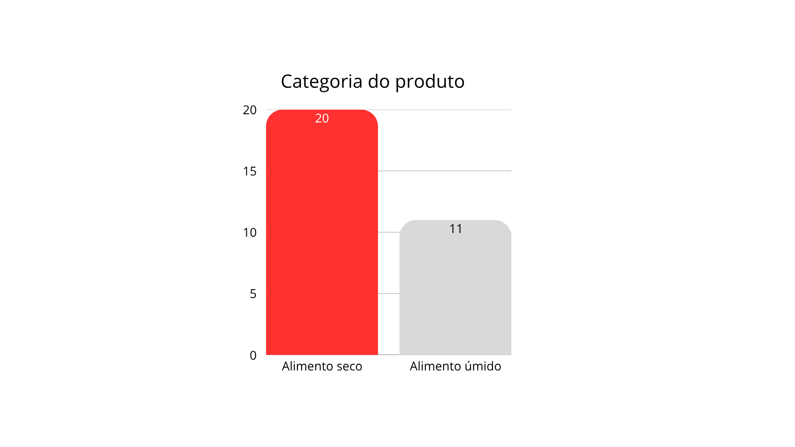
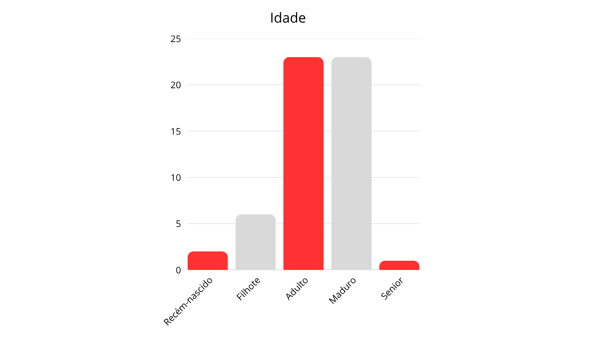
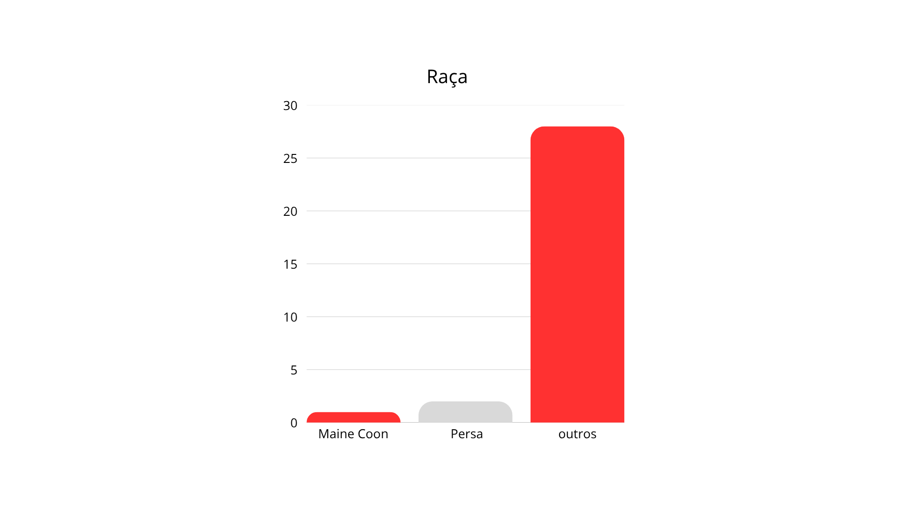
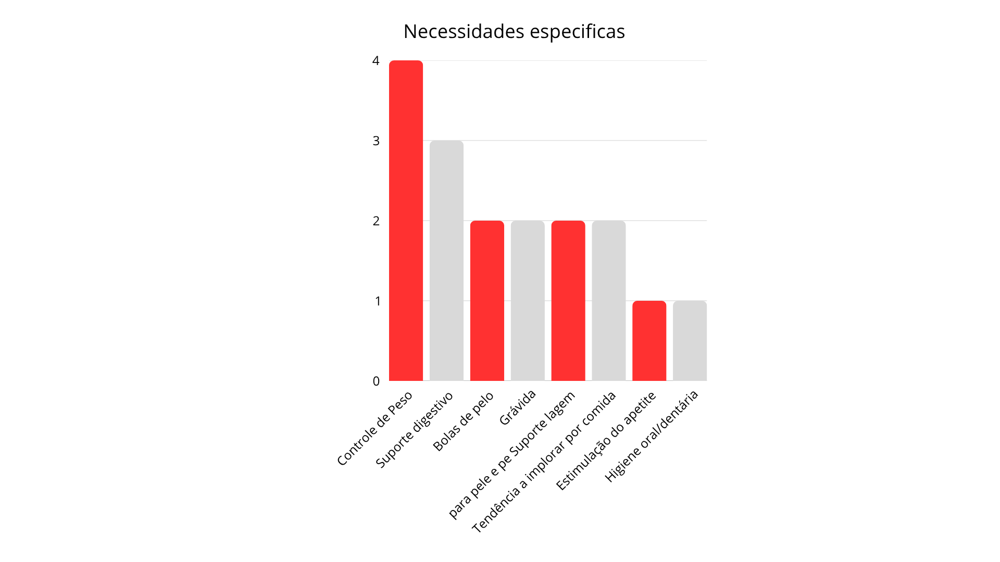
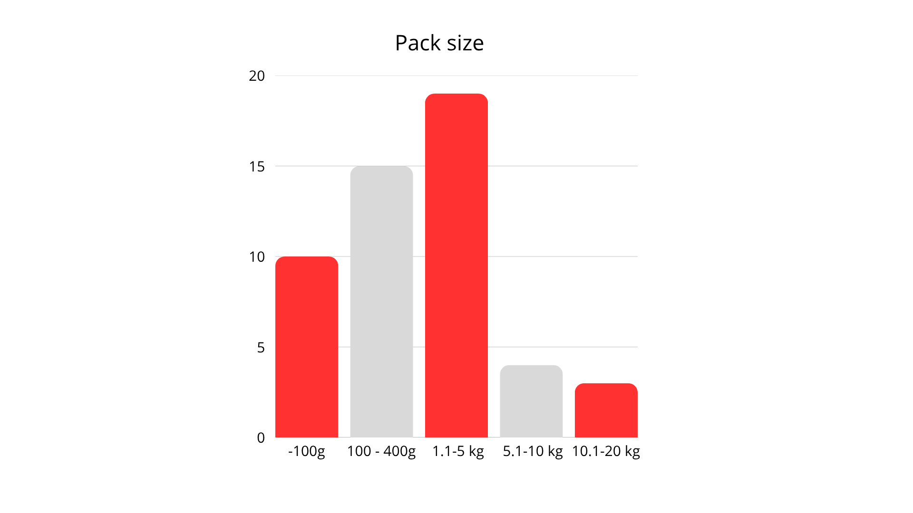
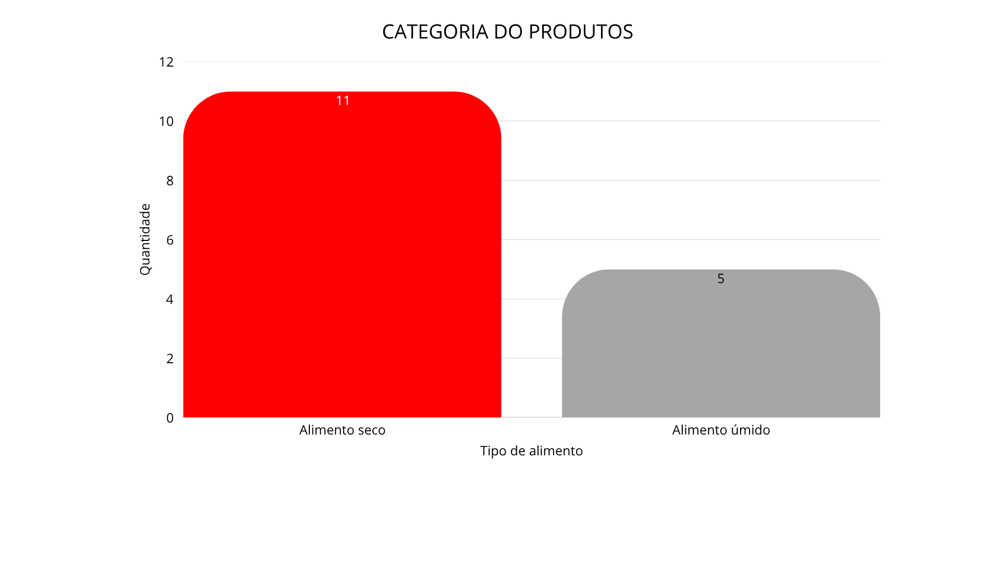
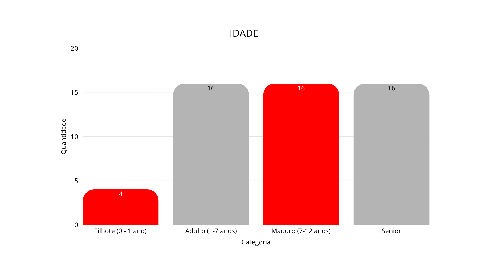
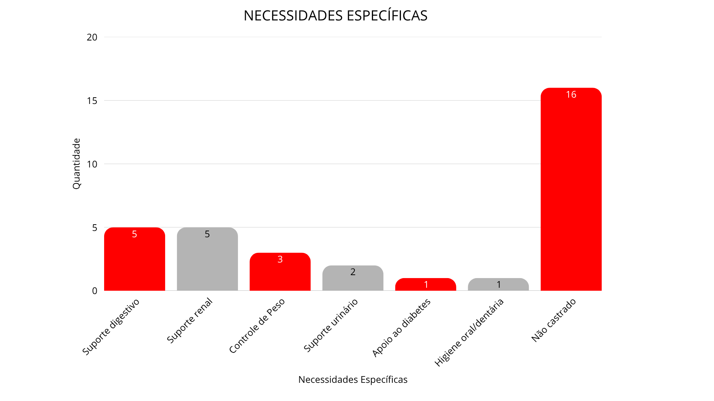
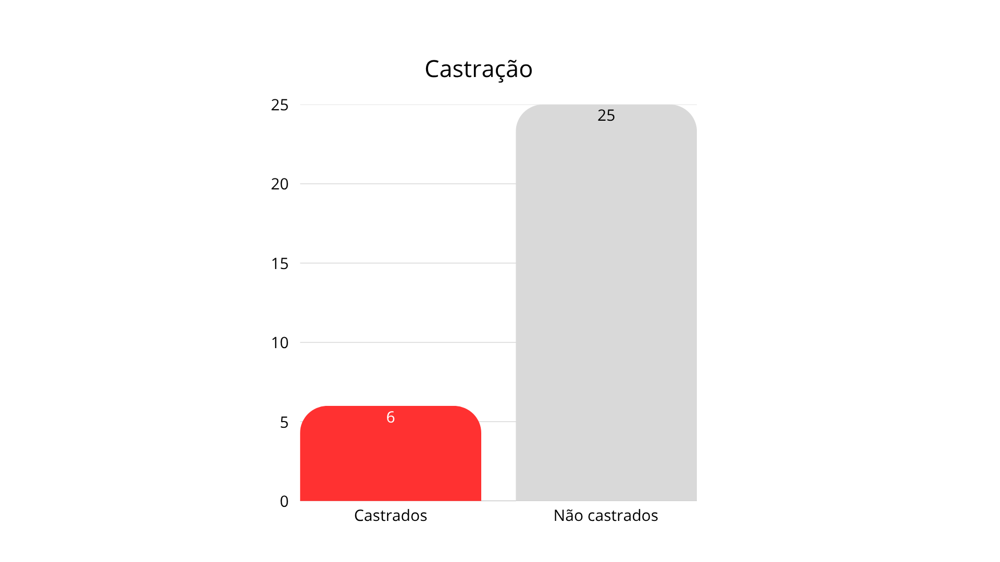

Gráfico da categoria dos Gatos

Gráfico 1 - Informações sobre saúde animal.

Gráfico 2 - Informações sobre nutrição por idade.

Gráfico 3 - Nutrição para cães por raça.

Gráfico 4 - Informações sobre saúde animal.
Gráfico 5 - Informações sobre saúde animal.

Gráfico 6 - Informações sobre saúde animal.
Gráfico da categoria Vet

Gráfico 1 - Informações sobre saúde animal.

Gráfico 2 - Dados sobre cuidados veterinários.

Gráfico 3 - Informações nutricionais dos animais.
Gráfico 4 - Informações nutricionais dos animais.

Gráfico 5 - Informações nutricionais dos animais.
Gráfico 6 - Informações nutricionais dos animais.